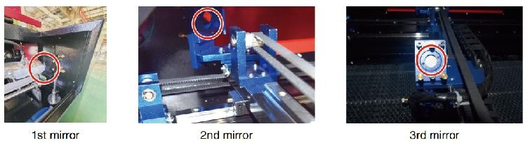
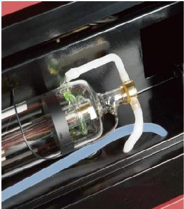
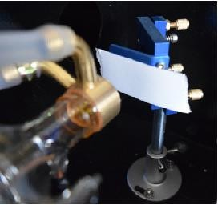
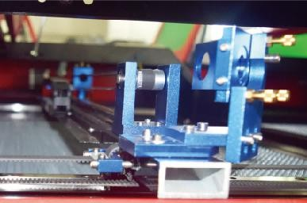
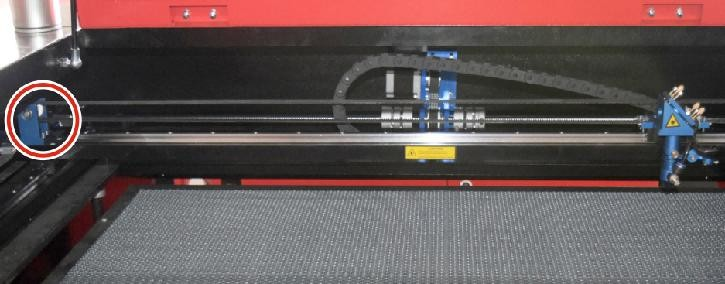
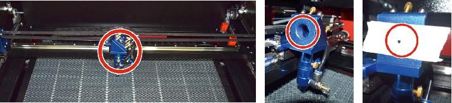
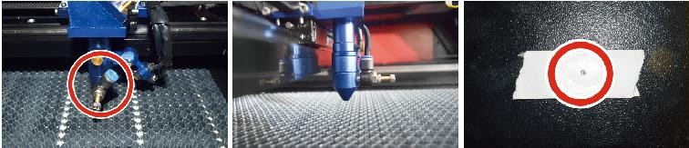
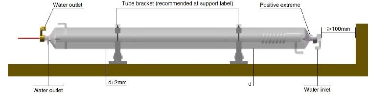

MANTENIMIENTO
1. Descripción general del mantenimiento
El uso de procedimientos distintos a los especificados en este documento puede provocar una exposición peligrosa a la radiación láser. Apague siempre el aparato y desconéctelo de la fuente de alimentación antes de realizar cualquier trabajo de limpieza o mantenimiento. Mantenga siempre limpio el sistema, ya que los residuos inflamables en las áreas de trabajo y de escape suponen un peligro de incendio. Solo los profesionales capacitados y calificados pueden modificar o desmontar este equipo.
Se debe suministrar agua destilada limpia y fría al sistema en todo momento.
El banco de trabajo debe limpiarse y el contenedor vaciarse todos los días.
El tercer espejo y la lente de enfoque deben inspeccionarse diariamente y limpiarse si es necesario.
Otros espejos y sistemas de escape deben inspeccionarse semanalmente y limpiarse si es necesario.
La alineación del haz debe comprobarse semanalmente.
El cableado debe revisarse semanalmente para detectar conexiones sueltas, especialmente en la fuente de alimentación del tubo láser.
Los rieles deben limpiarse y lubricarse al menos una veces al mes.
La asistencia de aire debe inspeccionarse una vez al mes y limpiarse si es necesario.
Toda la máquina láser, incluidos otros componentes como el sistema de refrigeración por agua, debe inspeccionarse una vez al mes y limpiarse si es necesario.
2. Sistema de refrigeración por agua
Nunca toque ni ajuste el suministro de agua del grabador mientras la bomba esté parada.
Conectado a la corriente.
El tubo láser debe enfriarse con agua destilada limpia para evitar sobrecalentamiento. Lo ideal es utilizar agua a temperatura ambiente o ligeramente más tibia. Los tubos láser requieren al menos 2 galones (7,5 litros) de agua destilada limpia y fría u otro refrigerante seguro para láser para evitar el sobrecalentamiento. Si la temperatura del agua está cerca de los 100 °F (38 °C), deje de trabajar hasta que se enfríe o encuentre una forma de bajar su temperatura sin interrumpir el suministro de agua del tubo láser. El agua tampoco debe enfriarse demasiado, ya que esto también puede hacer que el tubo láser de vidrio se rompa durante el uso. En los meses de invierno o si utiliza hielo para enfriar el agua caliente, asegúrese de que la temperatura nunca baje de los 50 °F (10 °C).
Se debe agregar más agua cada pocos días para garantizar la evaporación. no hace que la bomba quede expuesta durante el uso .
3. Limpieza
Limpieza del compartimento principal y de la máquina
Compruebe al menos una vez al día si hay acumulación de polvo en la cámara de grabado principal. Si es así, debe eliminarlo. Los intervalos y requisitos de limpieza exactos dependen en gran medida del material que se procesa y del tiempo de funcionamiento del equipo. Las máquinas limpias garantizan un rendimiento óptimo y reducen los costos de servicio, así como la riesgo de incendio o lesiones.
Limpie la ventana de visualización con un detergente suave y las lentes o un paño de algodón. No utilice toallas de papel, ya que pueden rayar el acrílico y reducir la capacidad de la tapa para protegerlo de la radiación láser. Limpie a fondo el interior de la cabina principal para eliminar cualquier residuo, partícula o sedimento. Se recomiendan toallas de papel y limpiadores de ventanas. Si es necesario, limpie la tapa del tubo láser después de que se haya enfriado por completo. Deje que cualquier líquido utilizado en cualquier limpieza se seque por completo antes de seguir utilizando el engaver .
Limpieza de la lente de enfoque
La lente tiene un revestimiento duradero que no se dañará con una limpieza adecuada y cuidadosa.
Debes revisar la lente y el espejo al tercer día y limpiarlos si hay residuos o neblina en la superficie. La eficiencia del láser se reducirá y la acumulación de calor en el aceite o el polvo puede dañar la lente.
Mueva la mesa de grabado a una distancia de aproximadamente 4 pulgadas (10 cm) debajo de la montura de la lente.
Mueva el cabezal del láser al centro de la mesa y coloque un paño debajo del soporte de la lente para que ésta no se dañe si se cae accidentalmente del soporte.
Desatornille el soporte de la lente y gírelo hacia la izquierda.
Retire la manguera de aire presurizado y la conexión del riel láser.
Después de colocar la lente sobre papel de limpieza de lentes limpio, gire con cuidado el soporte de la lente para que la lente y su junta tórica caigan sobre el paño de limpieza y retire la lente de la montura.
Revise la junta tórica y, si es necesario, límpiela con un hisopo de algodón y una toalla de papel o un paño para limpiar lentes.
Sople aire sobre la superficie de la lente para eliminar la mayor cantidad posible de polvo grueso.
Inspeccione la superficie de la lente y límpiela con una solución de limpieza de lentes y papel o paño para lentes si es necesario.
Sujete el borde del conjunto de lentes con un pañuelo de papel y utilice una solución de limpieza de lentes. Sujete la lente en ángulo y enjuague ambas superficies para eliminar la suciedad.
Coloque las lentes sobre un paño de limpieza limpio y aplique un poco de solución limpiadora de lentes en un lado de la lente. Deje que el líquido actúe durante aproximadamente un minuto y luego limpie suavemente con papel de limpieza de lentes humedecido en solución limpiadora de lentes. Seque este lado de la lente con un paño limpio y seco.
Repita el mismo proceso de limpieza en el otro lado de la lente. Nunca utilice las toallas de papel de limpieza dos veces. El polvo que se acumula en las toallas de papel de limpieza puede rayar la superficie de la lente.
Revise la lente. Si aún está sucia, repita el proceso de limpieza anterior hasta que la lente esté limpia. No toque la superficie de la lente después de limpiarla.
Inserte con cuidado la lente en el soporte, asegurándose de que el lado convexo circular esté hacia arriba. Coloque la junta tórica en la parte superior de la lente.
- Vuelva a ensamblar con cuidado la lente y el cabezal láser en el
orden inverso.
Limpieza de los espejos
Si hay residuos o neblina en la superficie del espejo, también se debe limpiar el espejo para mejorar el rendimiento y evitar daños permanentes.
El primer disparo se encuentra detrás del lado izquierdo de la máquina, más allá del extremo más alejado del eje Y. La segunda lente está en el eje Y en el extremo izquierdo del eje X. La tercera lente está ubicada en la parte superior del cabezal láser en el eje X. La mayor acumulación de residuos se encuentra en el tercer espejo y se debe revisar a diario con la lente de enfoque. La primera y la segunda lente se pueden revisar a diario si es necesario, pero si solo se revisan una vez a la semana, se recomienda limpiarlas a fondo.
Generalmente bien.


Ubicación de los tres espejos del sistema óptico.
Los espejos se pueden limpiar en su lugar usando pañuelos o paños para limpiar lentes, o se pueden quitar girándolos en sentido antihorario. Tenga cuidado de no tocar la superficie del espejo directamente. Evite presionar demasiado para no desgastar los residuos y causar rayones. Si se quitan los espejos para limpiarlos, Vuelva a instalarlos girándolos en el sentido de las agujas del reloj en su lugar teniendo cuidado de evitar rayarlos.
4. Alineación de la trayectoria del láser
La alineación adecuada del haz es muy importante para la eficiencia general y la calidad del trabajo de la máquina. Esta máquina se alinea completamente con el haz antes del envío. Sin embargo, cuando la grabadora llega por primera vez, aproximadamente una vez a la semana durante el funcionamiento normal, se recomienda al usuario que confirme que la alineación aún se encuentra en un nivel aceptable y que el espejo y la lente de enfoque no se mueven debido al movimiento de la máquina.


Tubo láser y conexiones asociadas.
Será necesario colocar un trozo de cinta en cada etapa del recorrido del láser, marcándolo para confirmar que la plataforma se mantiene correctamente alineada. De lo contrario, utilizará el soporte del tubo láser o los tornillos de la parte posterior del espejo desalineado para corregir el problema. Una vez que se agoten las cintas suministradas, recomendamos utilizar cintas de enmascarar, ya que son fáciles de manejar y usar.
Si la alineación del haz se realiza sin cuidado, el operador puede quedar expuesto a una pequeña cantidad de radiación. Siga estos procedimientos correctamente y tenga siempre cuidado al realizar la alineación del haz realice la alineación del haz a niveles de potencia bajos: 15 % o menos. Cualquier porcentaje superior hará que el láser encienda la tira de prueba en lugar de marcarla. Asegúrese de configurar la potencia máxima (no la mínima) al 15 %.
Alineación del tubo láser
Para probar la alineación del tubo láser con el primer espejo, corte una tira de cinta y colóquela en el marco del espejo.
No coloque la cinta directamente sobre el espejo. Encienda la máquina y ajuste el nivel de potencia al 15 % o menos.
Presiona PULSE para disparar el láser manualmente. Deberías poder ver una pequeña marca en la cinta. Si no la detecta, presiona PULSE nuevamente.


Prueba de alineación entre el tubo láser y el primer espejo.
Pulse el pulso para activar el láser. Asegúrese siempre de que el camino entre el láser y su objetivo no esté obstruido. Nunca permita que entren objetos extraños entre el láser y su objetivo.
Botón PULSE, tenga cuidado de no dejar ninguna parte de su cuerpo en la trayectoria del láser.
La marca del láser debe estar cerca del centro del orificio. Si el láser no está centrado en el primer espejo, corte la alimentación del láser y ajuste con cuidado el tubo láser en su soporte. Esto puede requerir aflojar los pernos de su soporte. Tenga cuidado de no aflojar ni apretar demasiado los pernos. Solo se puede ajustar un soporte a la vez.
Primera alineación de espejos
Después de asegurarse de que la luz láser esté correctamente alineada entre el tubo láser y el primer espejo, verifique la alineación entre el primer espejo y el segundo espejo. Primero, use las flechas direccionales del panel de control para enviar el segundo espejo hacia la parte posterior de la plataforma a lo largo del eje Y.


Alineación del segundo espejo: primera posición de comprobación.
Una vez que esté fijado, coloque un trozo de cinta adhesiva en el marco del segundo espejo. No coloque la cinta directamente sobre el espejo. Repita el paso anterior. Si el láser no está centrado en el segundo espejo, es necesario ajustar los tornillos de fijación del primer espejo. por lo tanto.
Para ajustar el espejo, afloje la tuerca del tornillo y gire suavemente el tornillo en el sentido de las agujas del reloj o en el sentido contrario. Cada tornillo ajusta una posición o un ángulo diferente. Lleve un registro de los tornillos que está ajustando y la dirección del ajuste. No gire el tornillo más de 1/4 de vuelta a la vez, especialmente pruebe la posición del láser después de cada ajuste para que pueda ver el efecto de cada reemplazo. Pruebe hasta que los rayos estén correctamente alineados, luego vuelva a apretar las tuercas de los tornillos cuando se hayan realizado todos los ajustes.
A continuación, utilice las flechas direccionales del panel de control para enviar el segundo espejo al frente de la cama a lo largo del eje Y.


Alineación del segundo espejo: segunda posición de comprobación.
Una vez que se haya fijado, coloque otra tira de cinta en el marco del segundo espejo. No coloque la cinta directamente sobre el espejo. Repita los pasos del punto 5.4.1 y, si es necesario, ajuste los tornillos de fijación del primer espejo. Pruebe nuevamente hasta que las vigas estén correctamente alineadas y luego vuelva a apretar las tuercas de los tornillos.
Segunda alineación de espejos
La marca del láser debe estar cerca del centro del orificio. Si el láser no está centrado en el primer espejo, corte la alimentación del láser y ajuste con cuidado el tubo láser en su soporte. Esto puede requerir aflojar los pernos de su soporte. Tenga cuidado de no aflojar ni apretar demasiado los pernos. Solo se puede ajustar un soporte a la vez.


Comprobación de la alineación del segundo espejo.
Alineación del tercer espejo
Después de asegurarse de que el láser esté correctamente alineado entre el segundo y tercer espejo, verifique la alineación entre el tercer espejo y la mesa. Primero, retire la manguera de asistencia de aire del cabezal láser. Luego, coloque un trozo de cinta en la parte inferior del cabezal láser y presiónelo firmemente contra la boquilla. Esto dejará una marca de anillo que puede ayudarlo a verificar la precisión. Repita los pasos del 5.4.1. Si el láser no está centrado a través del cabezal láser, ajuste el tornillo de fijación del tercer espejo como se muestra en el 5.4.2. Pruebe nuevamente hasta que los rayos estén correctamente alineados, luego vuelva a apretar las tuercas de los tornillos.


Comprobación de la alineación del tercer espejo.
Instalación del tubo láser
Diagrama esquemático de la instalación del tubo láser:


Diagrama esquemático de instalación del tubo láser.
- Instálelo de acuerdo con el logotipo del láser y conecte
correctamente los cables de conexión del cátodo y el ánodo, la tubería de entrada de agua y la tubería de salida de agua del láser.
Encienda el enfriador y ajuste el ángulo del láser para asegurarse de que el refrigerante llene el láser y no haya obstrucciones.
Retire la marca de apertura óptica y luego encienda la fuente de alimentación del láser para la depuración de la trayectoria óptica.
Problemas y solución de problemas
Problema 1: El láser siempre funciona a máxima potencia o la corriente no es ajustable.
El láser está equipado con un terminal de control de potencia que está conectado incorrectamente; verifique cuidadosamente la conexión del terminal.
El láser tiene un corte de energía; intente reemplazar la fuente de alimentación.
Fallo en la placa de control de la máquina láser; comuníquese con el servicio de atención al cliente.
Problema 2: El láser no emite luz.
El láser está equipado con un terminal de control de potencia que está conectado incorrectamente o la línea de conexión de control está rota; verifique cuidadosamente si los terminales y los cables de conexión están mal conectados o no se encienden.
La protección del agua del enfriador falla y el refrigerante del enfriador es insuficiente; reemplace el protector de agua o agregue refrigerante.
Los láseres están equipados con fallas de energía o problemas de suministro de energía; intente reemplazar el cable de alimentación con una fuente de alimentación o un cable de alimentación de red.
Fallo en la placa de control de la máquina láser; comuníquese con el servicio de atención al cliente.
Fallo del láser; comuníquese con el servicio de atención al cliente.
Problema 3: Ignición por descarga.
La línea de conexión entre el láser y la fuente de alimentación equipada con láser está dañada o rota; intente reemplazar el cable.
Falla del láser; comuníquese con el servicio de atención al cliente.
Problema 4: Requisitos del medio ambiente.
El láser está equipado con una fuente de alimentación y debe funcionar en un entorno bien ventilado.
El espacio de trabajo debe cumplir con las normas de seguridad locales para el funcionamiento de equipos láser. Nota : Requisitos ambientales .
Temperatura de funcionamiento: 10 °C ~ 38 °C
Temperatura de almacenamiento: -10 °C ~ 35 °C Humedad de
almacenamiento: 20 % HR ~ 80 % HR
5. Instrucciones de lubricación
Para obtener mejores resultados, limpie y lubrique los rieles de la máquina de grabado cada dos semanas (si el uso es continuo).
Apague la máquina de grabado láser.
Mueva suavemente el cabezal del láser para retirarlo del camino.
Limpie todo el polvo y los residuos de los rieles de los ejes X e Y con un paño de algodón seco hasta que queden brillantes y limpios.
Haga lo mismo con los tornillos del eje Z.
Lubrique los rieles y tornillos con grasa.
Mueva suavemente el cabezal láser y el eje X para que el lubricante se distribuya uniformemente a lo largo de los dos rieles, y subir y bajar la cama para distribuir uniformemente el lubricante a lo largo de los tornillos.